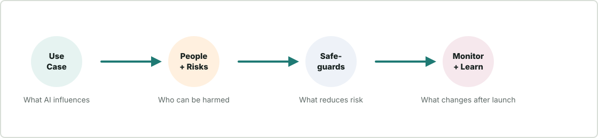

Lesson 0001
Turn responsible AI principles into concrete audit questions.
A six-lesson practical pathway for turning responsible AI principles into audit questions you can use on real AI systems.

Turn responsible AI principles into concrete audit questions.
Map the decision, people, harms, and controls before risks hide.
Ask better questions about fairness, bias, and inclusion.
Trace privacy, security, and data risks through the system.
Turn transparency and accountability into operational checks.
Connect tools, monitoring, ownership, and next steps.
Six responsible AI principles as practical audit questions.
A single checklist for real project review.
The vocabulary used across the pathway.
This pathway is based on Microsoft's Ethical and Responsible AI lesson from AI for Beginners. Supporting sources are listed in RESOURCES.md.